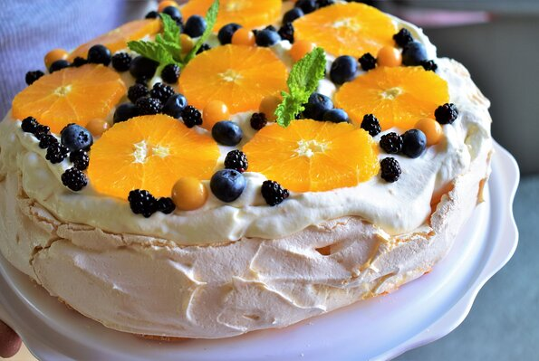

Orange Berry Pavlova

Description
A sweet, marshmallow-y base, topped with unsweetened orange-flavored cream and fresh berries, makes for an impressive and delicious dessert!
You can use any variation of mixed fresh berries for the decoration.
Ingredients
Pavlova Base:
- 6 egg whites, room temperature
- ½ teaspoon cream of tartar
- 1 pinch salt
- 1 cup white sugar
- 1 teaspoon vanilla extract
- ½ teaspoon almond extract
- 1 ½ tablespoons cornstarch
Orange Whipped Cream:
- 2 cups heavy whipping cream
- 1 large orange, zested
- 1 teaspoon vanilla extract
Topping:
- 1 large orange, peeled and sliced
- ¾ cup mixed fresh berries
Steps
- Preheat the oven to 250 degrees F (120 degrees C). Draw a 9-inch circle on a large sheet of parchment paper. Place parchment on a large baking sheet with the circle facing down and centered in the pan.
- Beat together egg whites, cream of tartar, and salt on high speed with an electric mixer in a bowl until soft peaks form. Add in sugar 1 tablespoon at a time, beating continuously, until stiff, glossy peaks form. Mix in vanilla and almond extracts. Sift cornstarch over the egg mixture and gently fold in until just combined.
- Pour egg mixture into the center of the circle on the parchment paper on the prepared pan. Starting from the center and moving outwards, gently form the meringue into a round no larger than the drawn circle. Create an impression in the center of the meringue so the edges are slightly taller than the middle.
- Place into the preheated oven and bake until the pavlova feels firm and dry to the touch, 1 to 1 1/2 hours. Turn the oven off without removing pavlova. Leave in the oven to cool for at least 1 hour.
- Pour heavy whipping cream into a large bowl. Beat at medium-high speed until soft peaks form. Add orange zest and vanilla extract; beat until combined.
- Gently remove pavlova base from the parchment paper and place onto a serving tray. Top with whipped cream, oranges slices, and mixed berries. Serve immediately.